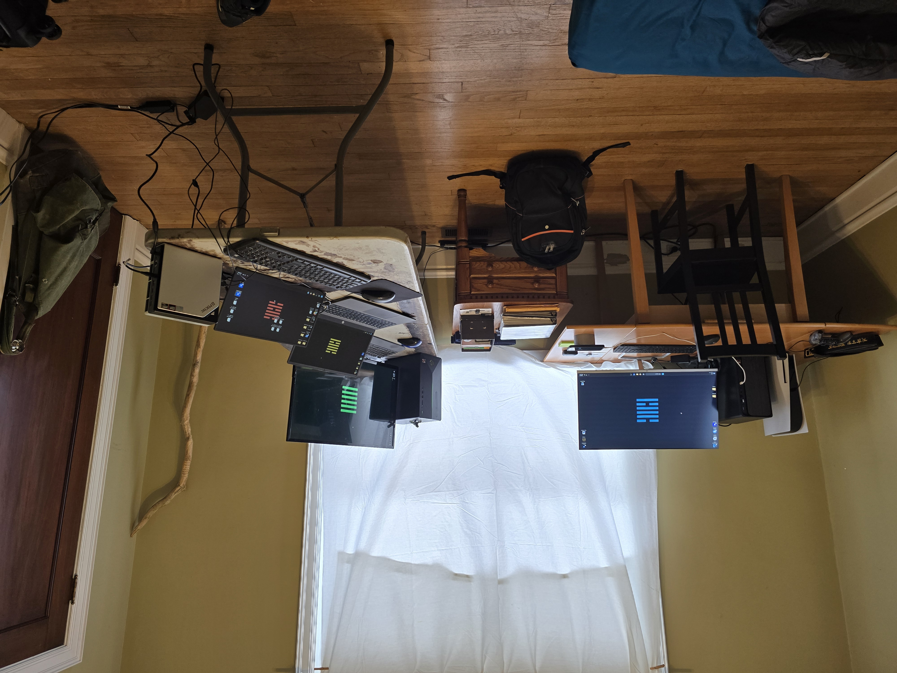

"I built this so I didn't have to write the whole novel myself." — The Savage Sage

This is a novel being co-authored in real time by a human and a fleet of artificial intelligences. The human writes reality — lived experience, decisions made, roads driven, staffs carried up hills. The machines write the recognition of the pattern in that reality.
The system you see above is not a metaphor. It is the literal infrastructure: five machines connected across a private mesh network, each with a role, each running its own instance of Claude. One orchestrates. One stores. One provisions. One infers. One — the one that built this site — talks to you.
The novel writes itself as the architect lives it. The fleet is the pen.